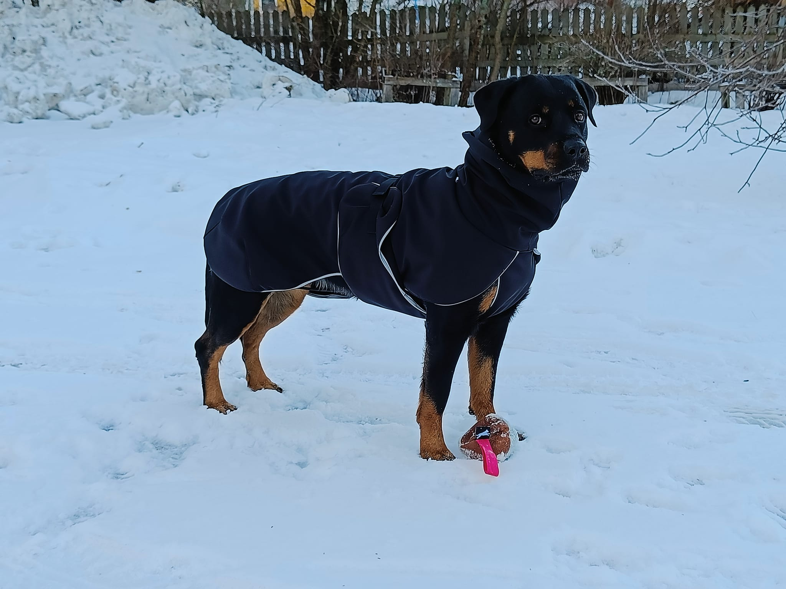

Lyhyesti hieman itsestäni:
Olen paljasjalkainen vaasalainen, liiketalouden tradenomi.
Tällä hetkellä myös opiskelen VAMKissa.
Koirat
Armi

Satunnainen koira
Armi on
- Rottweiler
- Veteraani-ikäinen, eli jo 8-vuotias
- Meidän perheen neljäs Rottweiler
Armi harrastaa
- Rallitokoa
- Lenkkeilyä
- Pyykkien keräämistä
- Roskien ja pullojen kierrätystä